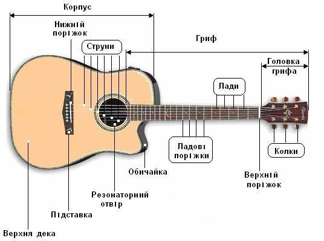

Variety Guitar
Information

Some of Variety Guitar's
Information
Естрадна(Дредноут (англ. dreadnought - безстрашний)) — вид акустичних гітар, що відрізняється збільшеним грифом та корпусом характерної «прямокутної» форми. В порівнянні з класичним корпусом має підвищену гучність і переважання низьких частот в тембрі. Розроблений в 20-х роках XX століття фірмою «Мартін» і досі вважається стандартом в гітаробудуванні.
У 20-х роках використовувався в основному для «кантрі» і популярно-естрадної музики. У 50-х разом з іншими фолк-гітарами також використовувався для домашніх або бардівских стилів, акустичного блюзу. Назва походить від назви американських кораблів Першої світової війни
У наш час дуже популярна гра на гітарі з металевими струнами, а значить і акустичні гітари дредноут.<
Дредноут - це вид акустичних гітар з металевими струнами, а точніше різновид фолк-гітар, так само називаються Вестерн або Кантрі.
Дредноути мають корпус «прямоугольної» форми, він більше, в порівнянні з корпусом класичною гітарою, гриф більш вузький, порівняно з класикою і має анкерний стрижень.
Так само є варіанти дредноутів з вирізом під підставою грифа, це полегшує доступб при грі на останніх ладах.
Дредноути, як і класичні гітари, налаштовуються на стандартний лад.
Так як натяг у металевих струн більше ніж у нейлонових, ці гітари, як правило, дуже міцні і виготовлені з певних порід дерева.
На дредноутах в основному грають медіатором і щоб не пошкодити корпус, на верхній деці встановлюється спеціальна накладка
Звук у дредноутів з переважанням низьких частот і дуже гучний, тому що такі гітари були винайдені в ті часи, коли підсилювачів не було, а для виступів на сценах був потрібний потужний і рокочучий звук.
На таких гітарах грають в різноманітних стилях, на них відмінно звучить рок-н-рол та інші напрямки, в яких важливий драйв. Так само для дредноутів, характерно виконання музичного супроводу.
Дредноути широко використовуються професіоналами, які грають в некласичних стилях.